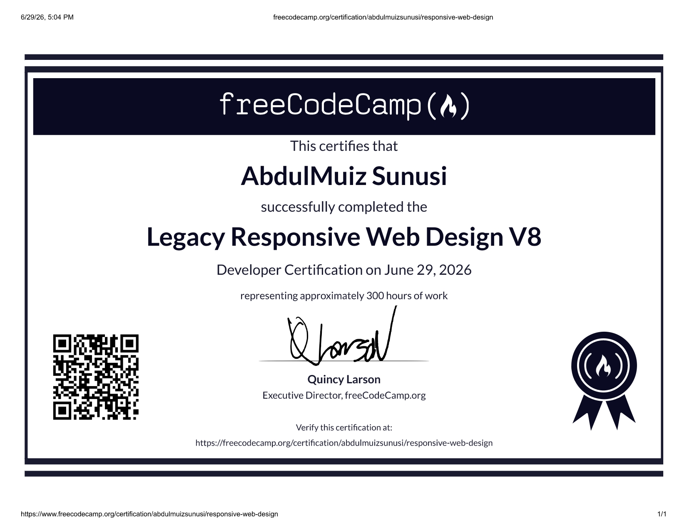

My Certifications
Certifications earned through freeCodeCamp's project-based curriculum.

This certification covers building responsive websites using HTML and CSS. It includes 300+ hours of coursework across visual design, accessibility, CSS Flexbox, CSS Grid, and five hands-on certification projects reviewed and verified by freeCodeCamp.
Currently working through the JavaScript Algorithms and Data Structures curriculum. This certification will cover variables, loops, functions, arrays, and algorithm scripting.